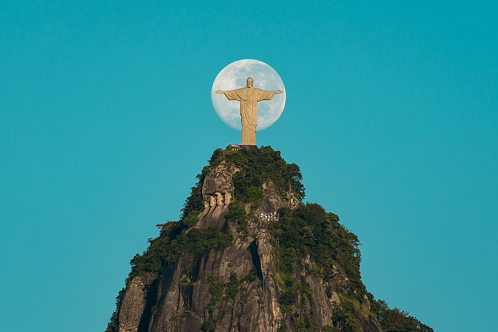
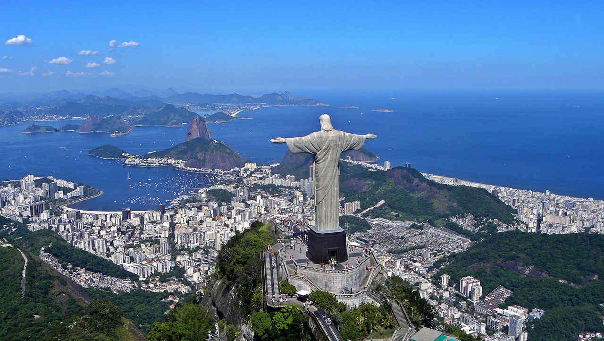

ישו הגואל
ארץ: ברזיל עיר: ריו דה ז'ניירו תאריך בנייה: 1920
פסל ישו הגואל הוא פסל ענק המתנשא לגובה 38 מטרים בדמותו של ישו וממוקם בראש הר קורקובדו שבעיר ריו דה ז'ניירו אשר בברזיל, ברום של כ-710 מטרים. ההר והפסל נמצאים שניהם ביער טיז'וקה ומשקיפים על ריו דה ז'ניירו כולה.


עד 2002 כדי להגיע לקרבת הפסל ולראותו מקרוב, צריך היה לטפס על ההר באמצעות גרם מדרגות בעל 222 שלבים, או לצאת למסלול הליכה מהפארק שבתחתית ההר. אולם מאז נוספו להר גם שלוש מעליות וארבעה גרמי מדרגות נעות כדי לאפשר את הגישה לקהל הרחב.